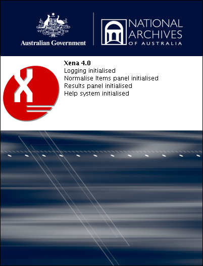

Xena 4.0 has been designed by the National Archives of Australia to aid in the long-term preservation of digital information. The Xena user interface is a convenient means of accessing the core functions of the National Archives' digital preservation framework.
Xena can convert any data object into an ASCII representation containing XML metadata, via base64 encoding. This is known as 'binary normalisation' and is fully reversible when there is a need to re-create an original data object. Xena can also convert data objects into openly specified file formats, such as XML or PNG, in a process known as 'normalisation.' These normalised files may be accessed via the Xena viewer.
